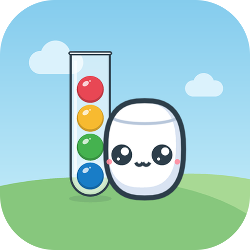

Candy Sort Buddies
Tap, sort, relax! A cozy color-sorting puzzle with 110 levels, 11 sweet worlds and 12 fruity buddies.
Support
Found a bug or have an idea? Write to pageonetwitch@gmail.com. Please mention your phone model, and the level number if it's about a level.
Lost progress? Progress is saved on your phone only. Uninstalling the game or clearing its data resets it.
Too many ads? Ads only appear between levels after you tap "Next", and never during play. The "+1 tube" helper is optional.
Privacy & licenses
Privacy Policy · Política de Privacidade (PT) · Open-source licenses